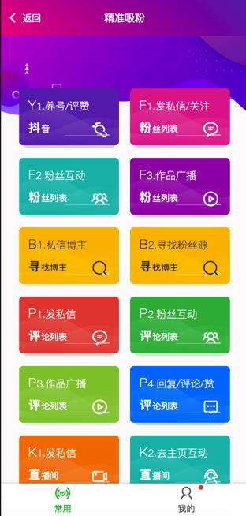
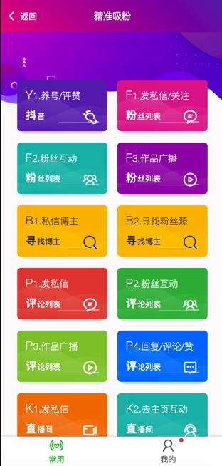

- Click - 基于坐标的操作
- 开始 - 基于控件的操作
- Click - 基于控件的操作
- UiSelector - 查找控件
- Canvas - 画布
- Console - 控制台
- Crypto - 加解密与消息摘要
- Device - 设备
- Dialogs - 对话框
- Engines - 脚本引擎
- Events - 事件与监听
- Floaty - 悬浮窗
- Files - 文件系统
- Globals - 一般全局函数
- Http - HTTP
- Images - 图片与图色处理
- Keys - 按键模拟
- Media - 多媒体
- Modules - 模块
- Sensors - 传感器
- Shell - Shell命令
- Storages - 本地存储
- Threads - 多线程
- Timers - 定时器
- UI - 用户界面
- Work with Java - 调用Java API
用JS任意控制手机上的APP
用JS任意控制手机上的APP#
(10分钟就可以上手)#
(10分钟就可以上手)
帮助开发者,快速生产友好的控制脚本程序
QQ群： 714554851#
1. 对app的控制(10分钟就可以上手)#
launchApp("微信");
click("发现");
click("朋友圈");
sleep(3000);
click(desc("评论"));
{kind=link}
{kind=link}
{kind=link}
{kind=link}
 



A. 开发环境#
代码与工具#
1. 下载安装开发工具HbuilderX#
建议下载这个版本：
链接: https://pan.baidu.com/s/1W0IEokddywK5iqoIx7biKw?pwd=1234
提取码: 1234
2. 克隆或下载源码#
a.示例项目(入门推荐)#
此方式为整个AJ_VUE演示项目，里面有Color UI组件库，演示，模板等，建议用户可以下载 此项目运行用于查看演示效果，通过里面的示例，可以快速掌握项目用法。
github地址(github)：https://github.com/yooge/robot
gitee地址[网速快]：https://gitee.com/vnool/autojs-vue
直接下载zip包：
b.空白项目(最小化项目，不含UI交互，高手使用)#
项目地址：请github搜索 autojs-vue-mini
此连接为一个空白的AJ_VUE示例工程，原生ui组件，熟练开发后使用
.
B. 运行与调试#
运行示例项目#
1. 初始化项目环境配置#
[步骤1]1. HbuiderX菜单 -> 运行 -> 运行到终端 -> 1.初始化/依赖包#
[步骤2]2. HbuiderX菜单 -> 运行 -> 运行到终端 -> 2.更新/安装基座#
[步骤3]3. HbuiderX菜单 -> 运行 -> 手机或模拟器 -> 运行基座选择 -> 自定义基座#
步骤1. 初始化是为了安装robot-tools组件
步骤2. 安装基座，文件下载后会存放到目录unpackage/debug/android_debug.apk
步骤3. 启用调试基座(手机上的app)
- 基座是用于动态调试的APP程序。
- 如果步骤2步骤3忘记操作，会意外安装错误的手机程序，会提示Robot对象不存在
.
2. 执行 (调试/运行)#
[步骤4] 3.1. 运行到手机#
1. USB线连接手机(需ADB生效)#
2. HbuiderX菜单 -> 运行 -> 手机或模拟器 -> 选择你的手机名字#
脚本代码，电脑上编辑，手机上可以立即运行 *
VUE代码，电脑上编辑，手机上可以立即同步。查看效果，需要重启页面 *
运行到模拟器，wifi连接 (另外聊)
.